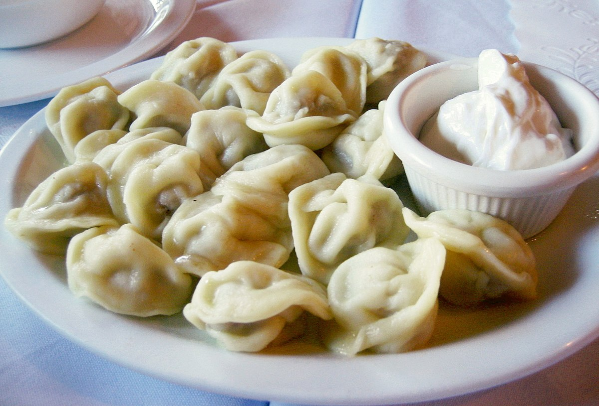

Пельмени
Я долго могу рассказывать, какие это вкусные пельмени, но вы лучше приготовьте, и попробуйте сами. Есть рецепты теста на воде, есть на молоке и воде, но мне больше всего нравится этот вариант. Тесто получается мягкое, нежное, эластичное, с ним очень приятно работать. Обязательно приобщите к лепке пельменей семью. Можно включить какой-нибудь любимый фильм и провести время весело и полезно. Дайте детям кусочек теста и фарш, им тоже очень понравится процесс. И пусть сначала у них будут получаться корявые пельмешки, но, поверьте, они будут самые вкусные! При варке пельмени отлично сохраняют форму. Начинка получается сочная, ароматная. Подавать пельмени можно со сметаной, горчицей, сливочным маслом, 3–6% уксусом. Хранятся пельмени в морозилке, срок годности — около 6 месяцев. Из указанного количества ингредиентов получается 100–110 штук.
Ингридиенты:

тесто:
250 мл молока
1 яйцо
1 ст.л. растительного масла
1 ч.л. соли
500–550 г муки
начинка:
350 г свинины
350 г говядины
200 г лука
соль
перец
также:
3–4 лавровых листа
5–7 горошин душистого перца
Приготовление
Готовим тесто.
Муку высыпать в миску, добавить яйцо, перемешать.
Добавить масло.
Добавить соль, перемешать.
Влить молоко, замесить тесто.
Молока может понадобиться чуть меньше или больше, чем указано в рецепте (зависит от качества и плотности муки).
Из теста сформировать шарик.
Накрыть его пищевой пленкой, оставить на столе на 40–45 минут (это необходимо, чтобы тесто «созрело»).
Готовим начинку.
Пропустить через мясорубку свинину, говядину, лук.
Посолить, поперчить.
Хорошо перемешать.
Тесто разделить на 2 или 3 части (частями его удобнее раскатывать, пока раскатываете одну часть теста, остальные положите в пакет, чтобы тесто не подсохло).
Раскатать тонко, слоем 1–2 мм.
При помощи стакана, или формочкой, вырезать кружки диаметром около 7 см.
На каждый кружок положить по 1 ч.л. фарша.
Сложить пополам, края защипнуть.
Уголки соединить, слепить.
Выложить пельмени на разделочную доску или поднос (сильно близко выкладывать не надо), поставить в морозилку.
После того, как пельмени заморозятся, можно их переложить в пакетики.
Пельмени можно варить сразу после лепки, либо замороженные (предварительно размораживать не надо).
В кастрюлю (я использовала кастрюлю объемом 4.5 литра) налить воду, посолить, довести до кипения.
В кипящую воду добавить пельмени.
Добавить лавровый лист и душистый перец.
После того, как пельмени всплывут, варить их в течение 5–7 минут.
Затем достать, при помощи шумовки, и подавать к столу.